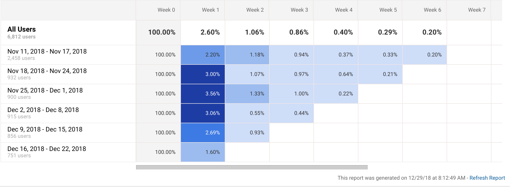

Data is the sword of the 21st century, those who wield it are the samurai.
— Grady Brooch, IBM Chief Scientist
Marty Cagan — seasoned product manager and author of a book and blog that makes practically every recommended reading list for new product managers — says that there are two academic courses that “every product manager should take”: finance and computer science.1 In this essay, I suggest we add another course to this list: statistics. A strong understanding of statistics facilitates three key responsibilities of product managment: understanding analytics, implementing cooprorate change, and making accurate forecasts.
To drive home the importance of statistics in understanding analytics, we’ll look at how
I’ll conclude with some resource recommendations that have helped me sharpen my understanding of statistics.
Statistics can be tedious, so I’ve tried to add some interactivity into this essay to make things more interesting and digestable.2
It’s almost a platitude that if you’re working in product managment, you should be collecting and reviewing data that gives you insights into what you should be building next. If you’ve ever looked at analytics for software products, you’ve probably run across a graph that looks like this:
Graphs like this one depict cohort analyses.3 This particular graph is from Google Analytics. Apple also has one for app analytics. So does Fabric.4
Cohort analyses can be very useful. For example, Eric Reis, in The Lean Startup, recounts how cohort analysis helped his startup realize that their efforts at improving their product weren’t working:
Thanks to the power of cohort analysis, we could not blame this failure on...external market conditions, or any other excuse. Each cohort represented an independent report card and try as we might, we were getting straight C’s.5
Although cohort analyses are often useful, they’re definitely not perfect ways of tracking progress in product development. Sometimes this is fine. We aren’t always looking for perfect inferences that our product changes are driving better metrics. Sometimes we just settle for evidence that suggests the inference. But, if we’re looking for solid inferences, traditional cohort analyses can fall short in ways we may not even realize if we don’t have a basic understanding of statistics.
Let’s look at an example. Suppose you’re a product manager for a fitness app and you’ve got a product that you’d like to start iterating on. You’re a good product manager, however, so you decide you’re going to “experiment” with a new feature and see how the introduction of that feature affects engagement using cohort analysis.
Name your feature and click “Ship it” to see the analytics:
If you’re looking at this cohort analysis, would you conclude that your new feature has improved your product?
So, statistics gives us insight into potential issues with the inferences we may draw from popular analytics tools. It also can give us hints as to how we can resolve these issues. Both of these skills make us better product managers.
Product managers must have a strong understanding of how to influence the organizations they’re working for. This idea is both implicit and explicit in much of what Marty Cagan writes about product management. For example, he says,
if your company is not yet set up around dedicated product teams, this is probably the most important thing to fix. Everything else depends on this.6
Here’s another example from Cagan involving a bold product move and coorporate transformation story from Adobe:
In the year 2011, Lea was leading product for Adobe’s Creative Suite.
She had helped Adobe to build a very large and successful business for itself – on the order of $2B in annual license revenue – with its desktop–based Creative Suite.
But Lea knew the market was changing, and the company needed to move from the old desktop-centric, annual upgrade model, to a subscription-based model supporting all the devices designers were now using...
Lea then began a sustained and exhausting campaign to continuously communicate with leaders and stakeholders across the entire company...A continuous stream of prototypes helped keep people excited about what this new future would bring...
This is one of the most impressive, nearly super-human, examples I know of a product leader driving massive and meaningful change in a large and established company.
Getting your company to reorganize around product teams or to take on a big product risk are not trivial tasks. Neither is the task of understanding whether any of the 100s of changes that are tauted as essential to success by various gurus are actually necessary for your organization.
Understanding both how to influence your organization effectively and the direction in which you should influence your organization means you need to be good a separating recommendations backed by strong evidence from the recomendations that merely sound good. It turns out that we’re pretty bad at this.
Exhibit A: One extremely common practice in business books is to present some sort of recommendation or framework for product or organizational design and then to point at three or four wildly successful business that use the framework. These kinds of observations are almost always framed as a reason to believe that the framework being offered is worth adopting by your business (and worth the money you paid to read about it).
This is a terrible reason for taking a framework seriously. To see why, take a look at the following graph:
This is a plot of 100 randomly generated data points. Click randomize a few times and notice that there’s almost always a few data points that wind up up the upper right square.
Now, imagine that the x-axis of the graph represents the extent to which a company adopts some trendy managment recommendation like Objectives and Key Results, Big Hairy Audatous Goals (BHAGs), or Jobs to Be Done, and imagine that the y-axis represents the companies’ performance. What the above graph shows is that by sheer coincidence, it’s quite likely that some of the high-performing companies will adopt some trendy management technique, and that it’s likely we’ll observe this even if there’s literally no correlation between the management practice and the company’s performance.
Because the authors only focus on a few examples, it’s easy to be fooled into thinking that the exemplars’ outstanding success is a good reason for adopting the managment or product strategies the author recommends. This has actually already happened with BHAGs from Jim Collins’ popular book Built to Last. Many of the companies that were supposedly “built to last” in part because of their reliance on “big hairy audatous goals” performed considerably worse after the book’s publication. The implication is that the correlation between the use of BHAGs (and the book’s other recommendations) and company performance is not as strong as the authors’ thought.7
Statistics gives us insight into potential issues with the inferences we may draw from popular business and product books. Being able to separate solid recommendations from merely trendy ones makes us better product managers.
Product managers have to make bets on the future. We just saw this with the above Adobe example, but if you think for a few seconds about the types of risk that product managers are charged with managing, it becomes obvious that product managers need to make these kinds of bets all the time. Product managers — as Marty Cagan points out— must manage risk around:
- value risk (whether customers will buy it or users will choose to use it)
- usability risk (whether users can figure out how to use it)
- feasibility risk (whether our engineers can build what we need with the time, skills and technology we have)
- business viability risk (whether this solution also works for the various aspects of our business)
Most of us aren’t very good at making these kinds of bets. Perhaps the most famous illustration of this comes from Phillip Tetlock’s 20-year study on expert political forecasts. Here’s a description of the study from Daniel Kahneman in Thinking Fast and Slow:
Tetlock interviewed 284 people who made their living “commenting or offering advice on political and economic trends”…Tetlock gathered more than 80,000 predictions…Respondents were asked to rate the probabilities of three alternative outcomes in every case: the persistence of the status quo, more of something such as political freedom or economic growth, or less of that thing.
The results were devastating…people who spend their time, and earn their living, studying a particular topic produce poorer predictions than dart-throwing monkeys who would have distributed their choices evenly over the options...8
In that same study, however, Phillip Tetlock found that there was a small group of people who were markedly better than the others at forecasting. He dubbed that group “superforecasters” and wrote an excellent book about what makes that group different from the others.
One of the key differences he found among those with higher forecasting ability was strong statistical thinking. More specifically, Tetlock found that superforecasters have a strong intuitive grasp of Baysian reasoning, which is a way of updating probabilistic judgments based on new information.9
I won’t get into how Bayes’ rule works here, but I do want to quickly walk through an exmaple that will hopefully illustrate how understanding the rule could be useful and show how counter-intuitive it is.
Suppose you’re roadmapping your fitness app, and you’ve started to worry that Apple’s new focus on services will lead them to start modifying their health app so that it’s features compete with the ones you are offering. You’re worried enough that you’re considering prioritizing features that will help you fend off Apple’s competitive moves over some other features that you believe could be more beneficial if Apple wasn’t going to enter the market.
So you have to make bet here. Good forecasters attach probabilities to their predictions (more on why some other time or just read Superforecasters). You do some research, but ultimately decide that you’re skeptical that Apple will actually do anything in the fitness space. A value of ”.10″ means you’d wager there’s a 10% chance Apple starts to build a fitness-oriented service.
Initial guess about Apple’s intentions (prior): 0.10
A few weeks after you’ve told your team about your skepticism, suppose a coworker pulls you aside and tells you that an Apple-savy forecaster like Above Avalon has recently predicted that Apple will in fact more aggressively pursue a fitness-oriented service built on top of their fitness app. She tells you,
This analyst can read Apple like a book. In the past, when Apple has made a similar move like this, there’s a 80% chance that this forecaster saw it coming.” (This is called “sensitivity.”) You should really reconsider your position.
“With enough predictions, anyone can predict an event,” you think to yourself, so you do some more research on the analyst and you find that 10% of the time when Apple wasn’t making a similar move, the analyst incorrectly predicts the move was coming anyway. (This is a measure of “specificity.”) Both of these pieces of information are captured in (adjustable) sliders below:
(sensitivity): 0.80
(specificity): 0.10
Given all of this information, what probability should you assign to your new forecast?
my new forecast is 0.70
To sum up: a strong grasp of statistics can help product managers read analytics, understand and influence organizational dynamics, and make better forecasts. Hopefully, that’s enough to convince you that a strong grasp of statistics is essential for good product management. If you’re convinced and want to start studying, I recommend the following resources: